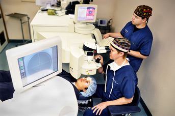
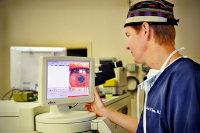

Choosing a Surgeon
Feel Comfortable with Your Physician
Choosing to have laser vision correction is a very personal decision. It’s important that you trust your surgeon to treat you and your eyes well. You should have the opportunity to meet your doctor before you have surgery. Make sure that you feel comfortable with your doctor and with the answers he or she gives to your questions. Do not rush your decision. Laser vision correction is an elective procedure and you shouldn’t feel pressured to have surgery or to have the procedure with a surgeon that you don’t know or trust.
Is Your Physician Providing All Your Care
It’s important to know if your doctor is going to be doing your pre- and postoperative care. Is your surgeon located locally and will you be able to see him or her urgently if you think you’re experiencing a problem?
Experience and Training
As with many things in life it is important that your surgeon have good training and experience in performing laser vision correction. Did your surgeon have residency or fellowship training in performing the procedure? How many years has your surgeon been performing laser vision correction? Is your surgeon keeping up with the changes as the technology evolves?
What Technology is Your Surgeon Using
Become familiar with some of the technology that is used in laser vision correction. Make sure that your surgeon uses an FDA approved laser (or a laser with an FDA exemption) for the LASIK procedure. Your physician should be using wavefront technology in your treatment or at the very least in the assessment of your eyes.
Pricing and Guarantees
Do not base your decision on price alone. Deals that sound too good to be true may have hidden fees or uncovered services. Low cost providers often depend on high patient volumes to make a profit. You want to ensure that your surgeon takes the time to carefully plan your treatment and to follow you as your eyes heal.
No physician can guarantee the outcome of any surgery. Although laser vision correction surgery is very reliable no one can honestly promise you that your surgery will be problem free.